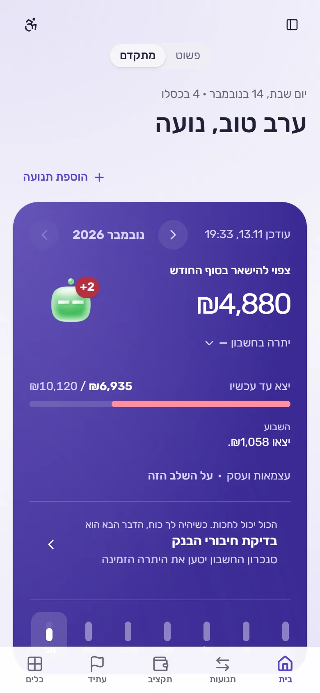
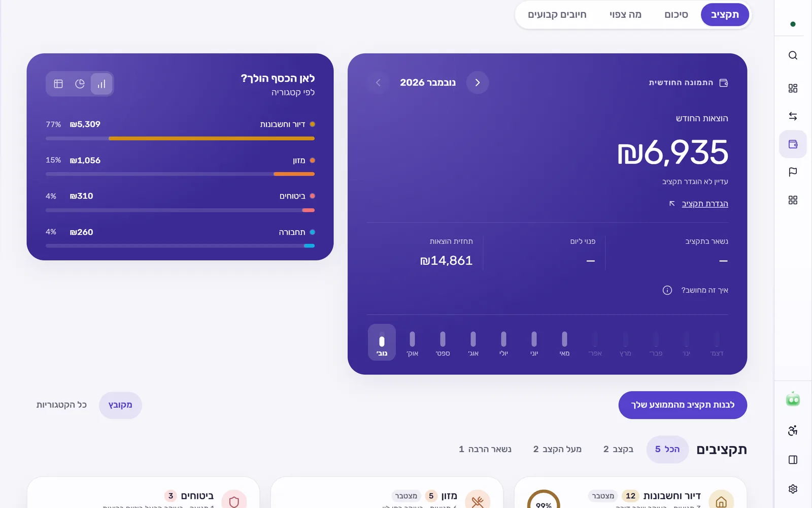

כסף רגוע
למשק הבית.
הבנקים, התקציב והעתיד שלכם במקום אחד. תקציב לכל שבוע, כלים לכל החלטה גדולה, וכל הנתונים נשארים אצלכם בבית.


מספר אחד ברור. כל השאר כשצריך.
מצב פשוט מראה כמה צפוי להישאר, את החודש לפי שורות ואת כל קטגוריה לפי שבועות. מצב מתקדם פותח את כל התמונה.
כל התנועות, מסודרות לפי שבועות
תנועות מכל הבנקים וכרטיסי האשראי במקום אחד, בצבעי הקטגוריות. הוספת מזומן לוקחת שנייה: מקלידים סכום, בוחרים קטגוריה, וזהו.
- חיפוש, סינון, פיצול ותגיות
- הוצאות בוורוד, הכנסות בירוק
- AI לבחירתכם מסווג תנועות חדשות, או בלי AI בכלל

תקציב שמראה את הקצב, לא רק את הסכום
לכל קטגוריה יש תקציב שבועי, כמה כבר יצא וכמה נשאר. ציון בריאות פיננסית מרכז את כל האזהרות בכפתור אחד, ותחזית התזרים מראה מה צפוי.
- תצוגת 50/30/20
- חיובים קבועים וחיובים קרובים
- יעדים, שווי נקי והשקעות

פרופילים למשפחה
מסך "מי משתמש?", משק בית אחד משותף, וכל אחד עם הסידור והנגישות שלו.
פיפ
חבר קטן שמצב הרוח שלו משקף את הכסף של הבית, ומזכיר בעדינות מה דורש טיפול. כל אחד בוחר פיפ משלו.
נגישות מלאה
תפריט נגישות (Alt+A), הצהרת נגישות לפי ת"י 5568 ו-WCAG 2.2 AA, ומצב פרטיות שמסתיר סכומים.
לשאול את הכסף
"כמה הוצאתי על אוכל בחודש שעבר?" בשפה רגילה, וגם בוט טלגרם עם משוב מיידי.
התשובות שבאמת חשובות כאן.
יותר מ-25 מחשבונים וכלים מודרכים, מסודרים לפי שלבי החיים. כל כלי מציין לאיזו שנה הנתונים שלו נכונים, והקוד מפנה למקור.
הנתונים שלכם לא עוזבים את הבית.
האפליקציה רצה על המחשב שלכם ומאזינה רק לכתובת המקומית. פרטי ההתחברות לבנק מוצפנים, והנתונים יושבים בקובץ אחד שאפשר לגבות. שום דבר לא נשלח החוצה, חוץ מהבנק עצמו וספק AI אם בחרתם כזה.
- הצפנת AES-256-GCM לפרטי ההתחברות
- גיבוי אוטומטי לפני כל שינוי במבנה הנתונים
- נעילת אפליקציה, וגישה מהטלפון רק בהפעלה מפורשת ועם קוד

שלוש דרכים להתחיל.
בפעם הראשונה, תהליך פתיחה קצר מלווה אתכם: פרופיל ופיפ, חיבור בנק או ייבוא קובץ, יעד חודשי ותקציבים.
Windows
מורידים את Penny Setup.exe ומריצים. בלי טרמינל ובלי Node.js. לעדכון, מריצים את המתקין החדש.
להורדהDocker
הכול בקונטיינר מבודד, עם עדכון וחזרה אוטומטית לגרסה הקודמת אם משהו לא תקין.
docker compose up -d --build
מקוד המקור
מתקין שירות שרץ תמיד, ואפליקציה בשורת התפריטים ב-macOS וב-Windows.
git clone https://github.com/Sergey-Bar/Penny.git cd Penny && npm install npm run setup
זה כלי אישי לחשבונות שלכם בלבד. משיכת נתונים אוטומטית מבנקים עלולה להפר את תנאי השימוש שלהם. המחשבונים נותנים הערכה, לא ייעוץ.